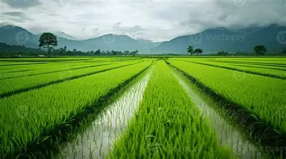

Population: 700 000
Cities: Although Ashia is about the size of lizak and Kionan it isn’t split up into cities.
Language: Izen but everyone can write Faden because of school.

Ashia has a humid climate which functions well for growing sugarcane and rice which is their main trades, although they also have an abundance of sheep products and have factories to manufacture clothing.Ashia has one main town in it’s center near a massive lake which supplies water to the town. A lot of people in the town work in the textiles industry whilst most people who live in smaller villages splattered around the region focus on agriculture. Since they heavily rely on trade the taxing affects them a reasonable amount. Their only access to knowledge, updated technology, and medicine is through trades and since they aren’t making as much from them they are unable to get enough. This has lead to the population of Ashia to decline over the years since living there has stopped being as sustainable.